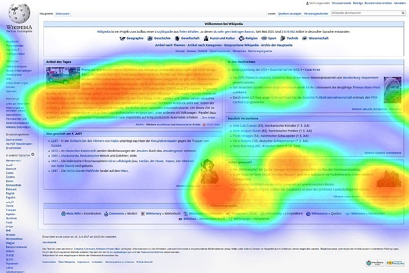
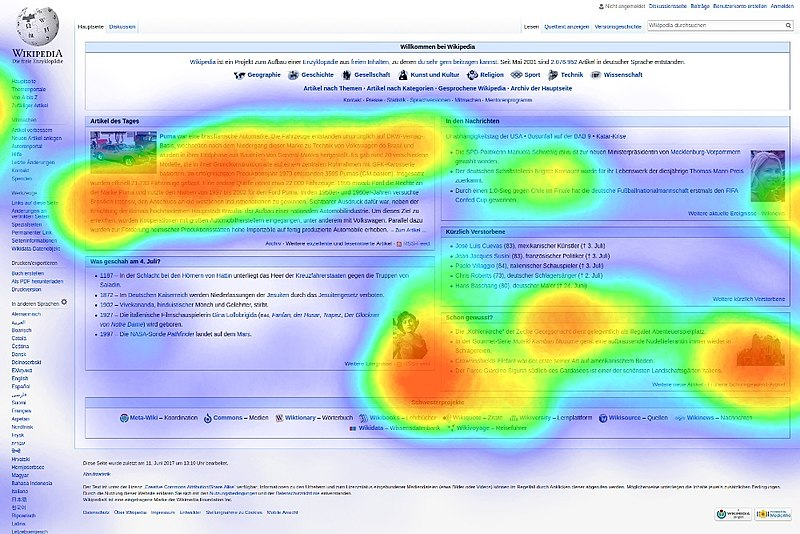

Data Mining
John Samuel
CPE Lyon
Year: 2022-2023
Email: john(dot)samuel(at)cpe(dot)fr

John Samuel
CPE Lyon
Year: 2022-2023
Email: john(dot)samuel(at)cpe(dot)fr

 

[
{
"languageLabel": "ENIAC coding system",
"year": "1943"
},
{
"languageLabel": "ENIAC Short Code",
"year": "1946"
},
{
"languageLabel": "Von Neumann and Goldstine graphing system",
"year": "1946"
}
]
<?xml version="1.0" encoding="UTF-8"?>
<root>
<element>
<languageLabel>ENIAC coding system</languageLabel>
<year>1943</year>
</element>
<element>
<languageLabel>ENIAC Short Code</languageLabel>
<year>1946</year>
</element>
<element>
<languageLabel>Von Neumann and Goldstine graphing system</languageLabel>
<year>1946</year>
</element>
</root>
languageLabel,year ENIAC coding system,1943 ENIAC Short Code,1946 Von Neumann and Goldstine graphing system,1946


| num | languageLabel | year |
|---|---|---|
| 1 | ENIAC coding system | 1943 |
| 2 | ENIAC Short Code | 1946 |
| 3 | Von Neumann and Goldstine graphing system | 1946 |
ENIAC coding system:1; ENIAC Short Code:2 Von Neumann and Goldstine graphing system:3 1943:1; 1946:2; 1946:3
{
"languageLabel": "ENIAC coding system",
"year": "1943"
}
{
"languageLabel": "ENIAC Short Code",
"year": "1946"
}
{
"languageLabel": "Von Neumann and Goldstine graphing system",
"year": "1946"
}
| identifiant | languageLabel,year |
|---|---|
| p1 | ENIAC coding system,1943 |
| p2 | ENIAC Short Code,1946 |
| p3 | Von Neumann and Goldstine graphing system,1946 |

import requests
url = "https://api.github.com/users/johnsamuelwrites"
response = requests.get(url)
print(response.json())

<xs:schema attributeFormDefault="unqualified"
elementFormDefault="qualified" xmlns:xs="http://www.w3.org/2001/XMLSchema">
<xs:element name="root" type="rootType"/>
<xs:complexType name="elementType">
<xs:sequence>
<xs:element type="xs:string" name="languageLabel"/>
<xs:element type="xs:short" name="year"/>
</xs:sequence>
</xs:complexType>
<xs:complexType name="rootType">
<xs:sequence>
<xs:element type="elementType" name="element" maxOccurs="unbounded" minOccurs="0"/>
</xs:sequence>
</xs:complexType>
</xs:schema>
| num | languageLabel | year |
|---|---|---|
| 1 | ENIAC coding system | 1943 |
\({num}\rightarrow{languageLabel}\)
\({languageLabel}\rightarrow{year}\)
\({num}\rightarrow{year}\)